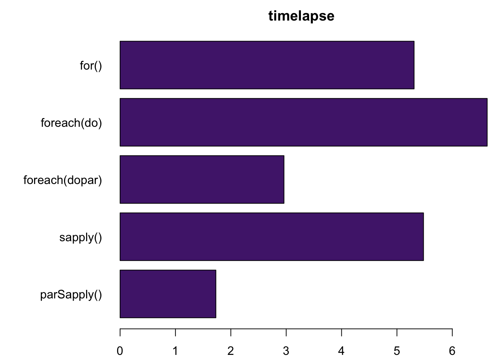

![]()
Why to parallelize
Have you ever noticed that RStudio never reaches 100% CPU usage even when running a very demanding task?
R runs only on a single thread on the CPU by default
Is it the most efficient way to run functions?
- Independent operations
results <- rep(0,10) for(num in 1:10) { results[num]<-num^2 } results[1] 1 4 9 16 25 36 49 64 81 100
Parallelization in R
It is possible to parallelize processes in R using specialized packages.
parallel
- Most used package
- Part of r-core.
library(parallel)Cores in our PC and management of clusters
Basic concepts
- Core: an individual processing unit within a CPU
- Cluster: R background sessions that allows parallelization of processes.
Load the package
library(parallel)
number of cores
cores<- detectCores()
make cluster
clust <- makeCluster(cores)
start created cluster
registerDoParallel(clust)
status of the clusters
showConnections()
close the cluster
stopCluster(cl = clust)
Methods of Paralleization
There are two main ways in which code can be parallelized, via sockets or via forking
- Socket approach: launches a new version of R on each core
- Forking approach: copies the entire current version of R and moves it to a new core
Socket pros and cons
- Pros
- Works on every OS.
- Each process on each node are 100% independent.
- Cons
- Each process is unique so it will be slower
- Variables and packages must be imported to the created cores.
- More complicated to implement.
Forking pros and cons1
- Pros
- Faster.
- Not necessary to import the variables and packages.
- Relatively easier to implement.
- Cons
- Does NOT work on Windows
- Processes are not totally independent, and can cause weird behaviors when runned in RStudio .
parallel and apply
parallel is designed to work with functions, and it is analogous to the use of functions like apply, as well as its derivatives lapply and sapply
| apply | parallel | INPUT | OUTPUT |
|---|---|---|---|
| apply | parApply (parRapply, parCapply)2 | data.frame, matrix | vector, list, array |
| sapply | parSapply | List, vector, data.frame | vector/matrix |
| lapply | parLapply | List, vector, data.frame | list |
foreach
foreach is a package designed for looping. It also allows to combine results in diferent formats.
library(foreach)
foreach(i=1:2) %do% exp(i)[[1]]
[1] 2.718282
[[2]]
[1] 7.389056library(foreach)
foreach(i=1:2, .combine='c') %do% exp(i)[1] 2.718282 7.389056library(foreach)
foreach(a=1:1000, b=rep(10, 2), .combine='c') %do% {a+b}[1] 11 12foreach3
By itself, foreach do not parallelize, but it can be combined with parallel and doParallel to allow paralellization
library(foreach)
library(parallel)
library(doParallel)
clust <- makeCluster(2)
registerDoParallel(clust)
foreach(i=1:2, .combine='c') %dopar% exp(i)
stopCluster(cl = clust)Warning: executing %dopar% sequentially: no parallel backend registered[1] 2.718282 7.389056Example
Determine which numbers on a sample are primes
Function:
isprime <- function(num){
prime=TRUE
i=2 #I need to start from 2, as prime numbers can only be divided by 1 and themselves.
while(i<num){ #The while loop will continue running as long as the value of 'i' is less than the specified number
if ((num %% i) == 0){ #The '%%' operator calculates the remainder when our number is divided by 'i.' If the remainder is 0, it will terminate the loop
prime = FALSE
break
}
i <- i+1
}
return(prime)
}data (10,000 numbers):
listnumbers <- sample(1:100000,10000)for4
primes<- rep(T,10000)
for(i in 1:length(listnumbers)){
primes[i] <- isprime(listnumbers[i])
}
result<-data.frame(number=listnumbers, is_prime=primes)[1] "Time difference of 5.308078 secs"foreach5
library(foreach)
primes_fe <-foreach(i = 1:length(listnumbers), .combine="c") %do% {
isprime(listnumbers[i])
}
result_fe<-data.frame(number=listnumbers, is_prime=primes_fe)[1] "Time difference of 6.629166 secs"foreach parallelized
library(parallel)
library(foreach)
library(doParallel)
cores <- detectCores()
clust <- parallel::makeCluster(cores)
registerDoParallel(clust)
primes_par_fe <- foreach(i = 1:length(listnumbers), .combine="c") %dopar% {
isprime(listnumbers[i])
}
result_par_fe<-data.frame(number=listnumbers, is_prime=primes_par_fe)
parallel::stopCluster(cl = clust)
[1] "Time difference of 2.964536 secs"sapply 6
primes_sa <- sapply(listnumbers, isprime)
result_sa<-data.frame(number=listnumbers, is_prime=primes_sa)[1] "Time difference of 5.478974 secs"parSapply
library(parallel)
cores <- detectCores()
clust <- parallel::makeCluster(cores)
prime_par_sa <- parSapply(clust, listnumbers, isprime)
result_par_sa<-data.frame(number=listnumbers, is_prime=prime_par_sa)
parallel::stopCluster(cl = clust) [1] "Time difference of 1.725008 secs"Has the processing time improved?

Footnotes
Code in this session wont be optimized for forking. Check mclapply() for more info.↩︎
parRapply, parCapply are parallel row and column apply functions for a matrix x; they may be slightly more efficient than parApply but do less post-processing of the result.↩︎
.combine=: ’c’:concatenate into a vector, ’cbind’ and ’rbind’: combine vectors into a matrix. Operators (’+’, ’*’): process numeric data↩︎
In this script, before actually doing the calculation, I explicitly created a vector with the same dimensions as the final result of the loop output. This is important not only because this particular function needs it, but because it allows a preallocation of memory, speding up the process.↩︎
This method is more or less equivalent to for, but in this case is slower because it does not optimize memory preallocation. The main advantage of the forEach syntax is that is shorter and easier to read, which is why some developers prefer it over for. It also allows simple parallelization and a native combination of results that will be handy to reduce code length.↩︎
apply is more efficient than foreach because it does a memory preallocation step in the background↩︎